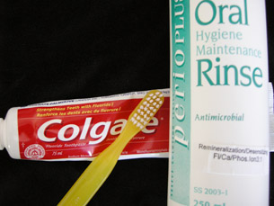

Module 7—Principles of Chemical Equilibrium
Lesson 3—Position of an Equilibrium
 Get
Focused
Get
Focused

When you brush your teeth you probably do so to remove harmful plaque that can cause tooth decay. Did you realize that brushing your teeth contributes to an equilibrium system? Most types of toothpaste and dental rinse contain fluoride, an important component in the process of building dental enamel—the outermost tooth layer made of hydroxyapatite and fibrous protein. The layer of enamel is part of a chemical equilibrium involving the processes of enamel formation and erosion. The chemical equilibrium is shown in the reaction
5 Ca2+(aq)
+ 3 PO43–(aq)
+ F–(aq)  Ca5(PO4)3F(s)
Ca5(PO4)3F(s)
Can you explain why dentists often ask their patients to use toothpastes and dental rinses containing fluoride? How would you incorporate your understanding of equilibrium to explain this practice?
In Lesson 2 you learned about the three types of chemical equilibria. In Lesson 3 you will study chemical systems in equilibrium in greater depth, and you will investigate the characteristics of these systems.
Consider the following question as you complete Lesson 3:
- Are all equilibrium states similar?
 Module
7: Lesson 3 Assignment
Module
7: Lesson 3 Assignment
In your lesson assignment you will analyze a model of dynamic equilibrium. Download a copy of the Module 7: Lesson 3 Assignment to your computer now. You will receive further instructions on how to complete this assignment later in the lesson. You will also receive further information on how to add to the table you started in Lesson 1.
You must decide what to do with the questions that are not marked by the teacher.
Remember that these questions provide you with the practice and feedback that you need to successfully complete this course. You should respond to all the questions and place those answers in your course folder.